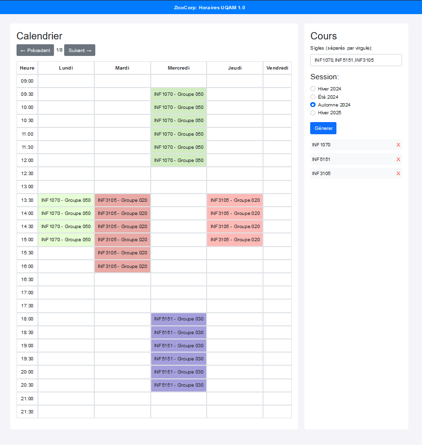
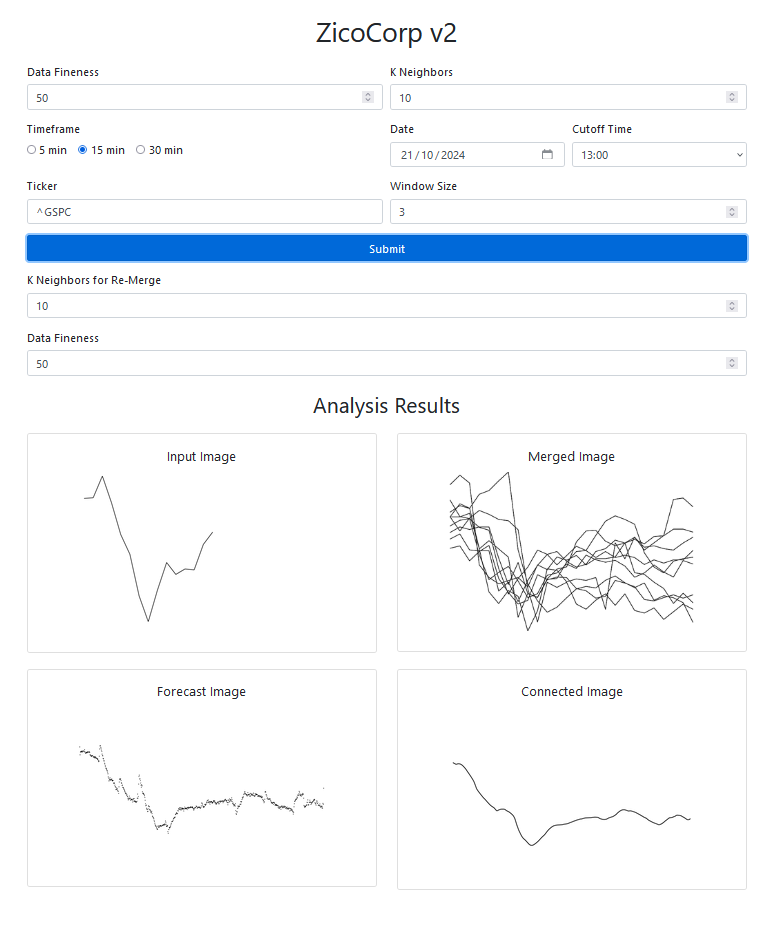
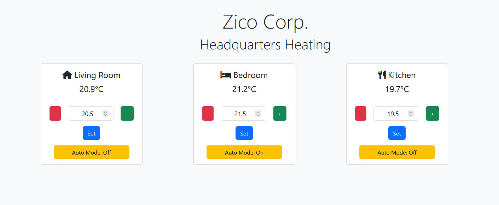

A showcase of my skills, projects, and passions.
Hey, I’m Zaki — a computer science grad from UQAM who loves bringing creative tech ideas to life. Whether it’s coding smart systems with C++ and Python or tinkering with Arduino projects, I’m all about making tech that works and wows. Big on cybersecurity, machine learning, and solving cool challenges, I’m always looking for the next fun project!
This project is a website that uses optimization techniques, particularly backtracking, to generate schedules based on the courses entered by the user for UQAM. The site provides all possible schedule combinations for the given course list.
The project is built with HTML/CSS/JS for the front-end and Python/Flask for the backend. The data is stored in an SQL database, which is automatically updated using BeautifulSoup scrapers.

Features ⚙️ :
- Generates all possible schedule combinations;
- Simple and intuitive interface for entering courses;
- Automatic data updates through scrapers;
- SQL database.
This project is a platform that uses convolutional neural network (CNN) models to predict the stock market chart for the current day. The predictions are based on 13 years of historical data.
The platform is built with HTML/CSS/JS/Bootstrap for the front-end and Python/Flask for the backend. Note that the yfinance API is currently experiencing usage limits.

Features ⚙️ :
- Predicts the stock market chart for the current day;
- Uses CNN models trained on 13 years of data;
- Simple interface to visualize prediction results.
3. IoT Thermostat Controller ☀️
This IoT project is designed to automate the control of a mechanical thermostat using multiple NodeMCU units, servo motors, and temperature and infrared sensors. The system allows for setting and maintaining a desired temperature range via HTTP requests managed by a central NodeMCU server.
The project is based on C++ code. This project enhances energy efficiency while modernizing an existing thermostat.

Features ⚙️ :
- Design of an automated thermostat control system using multiple NodeMCU units to optimize temperature regulation in an apartment;
- Integration of a temperature sensor and infrared sensor with a servo motor for precise control of a mechanical thermostat, improving energy efficiency;
- Setup of a central NodeMCU server to handle HTTP requests from client units, allowing smooth control and automatic adjustment for the desired temperature.